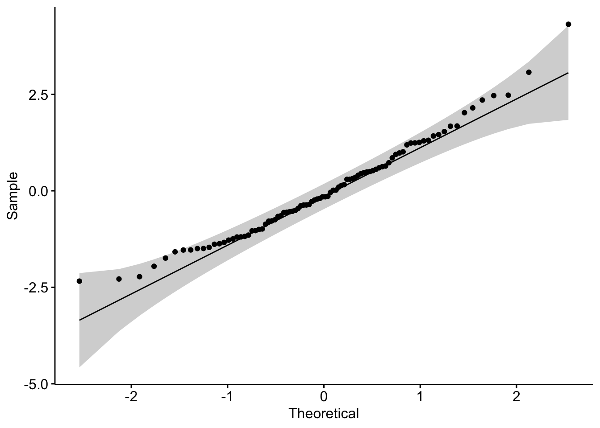
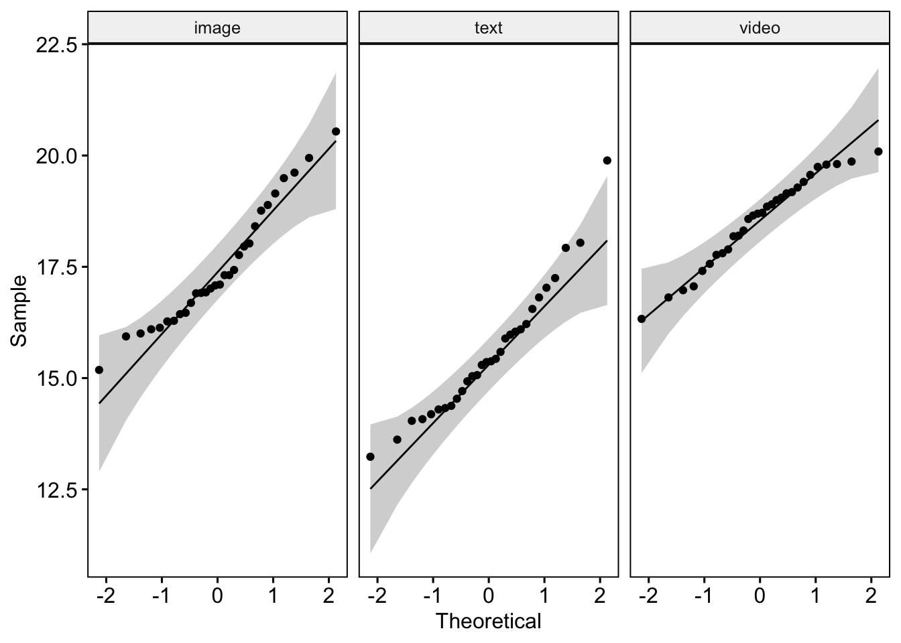

Class date: Nov 5, 2026
Based in part on lecture notes by Prof. Byoungkwan Lee and 이병관 (2023). 사회과학 연구자를 위한 R을 활용한 기초 통계. 한양대학교출판부.
6.5. R을 이용한 분석 예제
Exercise: 웹페이지의 구성 양식에 따른 충동구매를 탐색한 아딜라와 동료들(Adelaar et al., 2003)의 연구를 예를 들어 one-way between ANOVA를 수행해보자. 아딜라와 동료들(Adelaar et al., 2003)은 텍스트, 이미지, 동영상 등 세 가지 형식으로 만들어진 음악 CD 판매 웹페이지에 피험자들을 무선 배정하고 각 웹페이지에 노출된 후 그들의 충동구매 의도를 측정하였다. 연구자들은 웹페이지의 구성 양식에 따라 충동구매 의도가 달라지는가를 밝히기 위해 ANOVA를 통해 각 웹페이지의 구성 양식 간 충동구매 의도의 평균이 유의미한 차이가 있는지를 분석하였다.
media %>%group_by(format) %>%identify_outliers(impulse)
# A tibble: 1 × 5
format subjects impulse is.outlier is.extreme
<chr> <int> <dbl> <lgl> <lgl>
1 text 10 19.9 TRUE FALSE
Visual inspection (Q-Q plot)
# Build the linear modelmodel <-lm(impulse ~ format, data = media)# Create a QQ plot of residualsggqqplot(residuals(model))

ggqqplot(media, "impulse", facet.by ="format")

Test statistics
media %>%group_by(format) %>%shapiro_test(impulse)
# A tibble: 3 × 4
format variable statistic p
<chr> <chr> <dbl> <dbl>
1 image impulse 0.945 0.125
2 text impulse 0.947 0.143
3 video impulse 0.961 0.320
STEP2. Check the homogeneity of variance
media %>%levene_test(impulse ~ format)
# A tibble: 1 × 4
df1 df2 statistic p
<int> <int> <dbl> <dbl>
1 2 87 1.04 0.358
STEP3. Conduct one-way between ANOVA
*There are many packages available for performing ANOVA, and here, we will practice using the ez package. Note that the “id” variable must always be specified as a factor.
*In the one-way ANOVA condition, \(\eta^2\), \(\eta_P^2\), \(\eta_G^2\) effect size computes the same value.
library(dplyr)str(media)
'data.frame': 90 obs. of 3 variables:
$ subjects: int 1 2 3 4 5 6 7 8 9 10 ...
$ format : chr "text" "text" "text" "text" ...
$ impulse : num 15.4 18 14.4 16 15.9 ...
media.f <- media %>%mutate_at(vars(subjects, format), as.factor)str(media.f)
$ANOVA
Effect DFn DFd SSn SSd F p p<.05 ges
1 format 2 87 136.5974 144.1611 41.21771 2.555082e-13 * 0.48653
$`Levene's Test for Homogeneity of Variance`
DFn DFd SSn SSd F p p<.05
1 2 87 1.473811 61.72746 1.03861 0.3582926
$aov
Call:
aov(formula = formula(aov_formula), data = data)
Terms:
format Residuals
Sum of Squares 136.5975 144.1611
Deg. of Freedom 2 87
Residual standard error: 1.287254
Estimated effects may be unbalanced
library(effectsize)eta_squared(impulse$aov)
# Effect Size for ANOVA
Parameter | Eta2 | 95% CI
-------------------------------
format | 0.49 | [0.36, 1.00]
- One-sided CIs: upper bound fixed at [1.00].
Simultaneous Tests for General Linear Hypotheses
Multiple Comparisons of Means: Tukey Contrasts
Fit: aov(formula = formula(aov_formula), data = data)
Linear Hypotheses:
Estimate Std. Error t value Pr(>|t|)
text - image == 0 -1.8946 0.3324 -5.70 < 0.001 ***
video - image == 0 1.0869 0.3324 3.27 0.00438 **
video - text == 0 2.9814 0.3324 8.97 < 0.001 ***
---
Signif. codes: 0 '***' 0.001 '**' 0.01 '*' 0.05 '.' 0.1 ' ' 1
(Adjusted p values reported -- single-step method)
STEP4. Report the result of one-way between ANOVA
library(kableExtra)media %>%group_by(format) %>%get_summary_stats(impulse, type="common") %>% dplyr::select(c(format, n, mean, sd)) %>%rename(" "= format) %>%kbl(digits =3, align ="c",caption ="Table1. Descriptive Statistics for the Impulsive Purchase Intentions by Webpage Format") %>%kable_paper()
Table1. Descriptive Statistics for the Impulsive Purchase Intentions by Webpage Format
n
mean
sd
image
30
17.468
1.348
text
30
15.573
1.465
video
30
18.555
1.005
library(apaTables)apa.ezANOVA.table(impulse, filename ="tb_onewayb.doc",correction ="none", table.number =2, table.title ="Result of One-way Between Subject ANOVA")
Table 2
Result of One-way Between Subject ANOVA
Predictor df_num df_den SS_num SS_den F p ges
format 2 87 136.60 144.16 41.22 .000 .49
Note. df_num indicates degrees of freedom numerator. df_den indicates degrees of freedom denominator.
SS_num indicates sum of squares numerator. SS_den indicates sum of squares denominator.
ges indicates generalized eta-squared.
Table 3. Comparison of Impulsive Purchase Intentions by Webpage Format
Comparison
95% CI
group1
group2
Mean Difference
LB
UB
p.adj
p.adj.signif
image
text
-1.895
-2.687
-1.102
0.000
****
image
video
1.087
0.294
1.879
0.004
**
text
video
2.981
2.189
3.774
0.000
****
A one-way between-subjects ANOVA was conducted to determine whether there were differences in impulsive purchase intentions among the different webpage formats (text vs. image vs. video) for a music CD sales site. The assumptions of normality and homogeneity of variance were assessed using the Shapiro-Wilk test and Levene’s test, respectively. The results confirmed that both assumptions were met. Table 1 shows the descriptive statistics of the data.
As the Table 2 indicated, the result demonstrated that there were significant differences between the format conditions, F(2, 87) = 41.22, p < .001, with the format explaining approximately 49% of the variance, \(\eta_G^2\) = .49. Additionally, post hoc comparisons using the Tukey HSD test revealed significant differences in impulsive purchase intentions across the formats (see Table 3). The mean impulsive purchase intention for the video format (M = 18.6, SD = 1.00) was significantly higher than that for the image format (M = 17.5, SD = 1.35) and the text format (M = 15.6, SD = 1.26). These results suggest that more sensory-rich formats, such as video and images, can significantly enhance impulsive purchase intentions compared to traditional text-based formats.
Cf. When Homogeneity of variance assumption is violated
Welch’s ANOVA
oneway.test(impulse ~ format, data = media.f, var.equal = F)
One-way analysis of means (not assuming equal variances)
data: impulse and format
F = 41.871, num df = 2.000, denom df = 56.339, p-value = 7.195e-12
media.f %>%welch_anova_test(impulse ~ format)
# A tibble: 1 × 7
.y. n statistic DFn DFd p method
* <chr> <int> <dbl> <dbl> <dbl> <dbl> <chr>
1 impulse 90 41.9 2 56.3 7.20e-12 Welch ANOVA